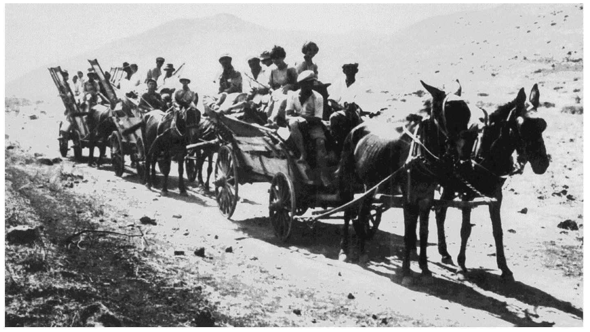

就在土耳其人成功地撕毁《色佛尔条约》之际，阿拉伯人正在顽强地抵抗指派给他们的受托管理国。与《侯赛因协定》相反，叙利亚——黎巴嫩已作为托管地分给法国，美索不达米亚和巴勒斯坦已成为英国的托管地，而埃及则已完全由英国人控制。对阿拉伯国家这种横暴的瓜分行径必然导致骚动，因为战争本身已在阿拉伯人中激起了强烈的民族感情。
一种共同的模式在战后争取独立的斗争中发展了起来。首先，在和平条约刚签订后的几年中爆发反抗和武装起义。然后，英国和法国逐渐恢复秩序，重申它们的权力。最后，它们允许不同程度的自治，虽然没有完全使民族主义者满意，但确实在第二次世界大战之前维持了一种不安定的和平。

图257 1920年，犹太殖民者在前往巴勒斯坦定居点的途中。
在巴勒斯坦，情况比较独特，因为那里的形势很快就恶化成由英国、阿拉伯人和犹太人三方参加的一场苦斗。阿拉伯人坚持认为，有关犹太人的“民族家园”的《贝尔福宣言》违背了先前给予阿拉伯人的许诺。1921年，英国人试图通过分出巴勒斯坦的内地部分成立独立的外约旦国家来抚慰阿拉伯人。这样就免除了所有关于建立犹太人家园的托管条款。
然而，在巴勒斯坦本土，随着犹太移民的不断涌入及忧虑重重的阿拉伯人对犹太人和英国人的回击，这种三方间的冲突变得日趋激烈。托管条款第六条要求英国为犹太人的迁移“提供方便”，并“鼓励在这片土地上设立犹太人定居点”。但是，同一条款中还规定，“居民中其他几部分人的权利和地位”将受到保护。显而易见，英国人当时认为这两条规定未必矛盾。他们预料，犹太人的迁移永远不会达到侵犯阿拉伯人“权利和地位”的程度。他们未能预见到1933年希特勒上台将产生的影响。犹太移民从1932年的9553人猛增到1935年的61854人。巴勒斯坦犹太人的总人数从1919年的6.5万人上升到1939年的45万人。
只要犹太人的涌入始终适度，阿拉伯人也不会提出强烈的反对。其实，他们确曾欢迎过有钱、有干劲、有技艺的犹太人。他们自己也已从犹太人在恢复土地肥力、建立工业和控制疾病方面所创造的种种成功中大大得益。但是，当移居的小溪变成一股洪流时，阿拉伯人便进行了猛烈的反击。阿拉伯人指出，他们没有任何理由因西方的反闪族主义而失去自己的国家。“反闪族主义是一种可悲的西方病……我们不是反闪族主义者，我们也是闪族。然而，这个西方的问题如今却要我们付出代价来予以解决。你们认为这样做公正吗？”[1]
阿拉伯人对犹太人的攻击变得愈益频繁和猛烈。英国的反应是在这些大暴动之后派出了皇家专门调查委员会。到第二次世界大战时，几个委员会已对情况进行了调查，他们企图满足三方不同且相互冲突的利益——犹太复国主义者的热望、阿拉伯人的民族主义要求和英帝国的利益，所以他们的建议始终摇摆不定。例如，1939年5月的《白皮书》提出，巴勒斯坦在10年内成为一个独立的国家，并提出对犹太人迁移和土地购买加以明确的限制。阿拉伯人和犹太人都拒绝了英国人的建议，巴勒斯坦的矛盾甚至到第二次世界大战爆发时还在原地踏步。